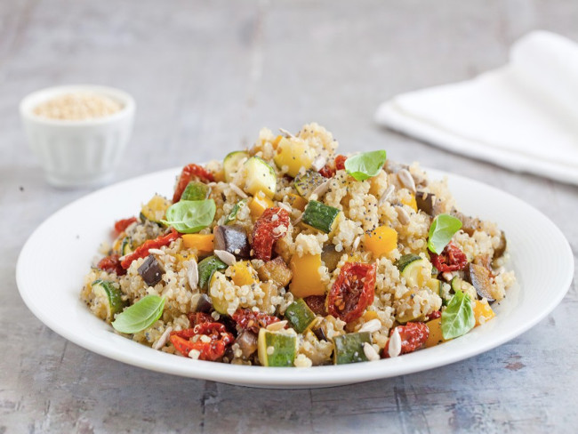

Quinoa con verdure

Ingredienti:
• 200 g di quinoa
• 2 zucchine verdi
• 1 melanzana lunga
• 1 peperone giallo
• 2-3 cucchiai di pomodorini sott'olio
• 1 spicchio d'aglio
• 1-2 cucchiai di semi misti a piacere (lino, sesamo, papavero, girasole)
• basilico fresco
• olio extravergine di oliva
• sale
• pepe
Procedimento:
1) Per realizzare la quinoa con verdure iniziate a sciacquare la quinoa più volte in acqua fredda e lasciatela scolare molto bene all'interno di un colino. Ponetela in padella senza grassi e fatela tostare mescolando spesso per 3 minuti.
2) Trasferitela in una casseruola e copritela con il doppio, in volume, di acqua calda.
3)Ponete sul fuoco e fate cuocere, coperto e a fiamma bassa, per circa 15 minuti o fino ad assorbimento del liquido. Se al contrario dovesse asciugarsi troppo potete aggiungere altra acqua in cottura. Trasferitela in una ciotola e lasciate raffreddare. Nel frattempo tagliate a dadini le zucchine, la melanzana e il peperone e fateli saltare in padella con olio e aglio. Al termine della cottura aggiustate di sale e pepe e quindi fate raffreddare.
4) Unite alla quinoa le verdure cotte e giunte a temperatura ambiente, i pomodorini secchi ben scolati dall'olio, il misto di semi e condite con olio, sale e pepe. Completate con qualche fogliolina di basilico e servite subito la quinoa con verdure.